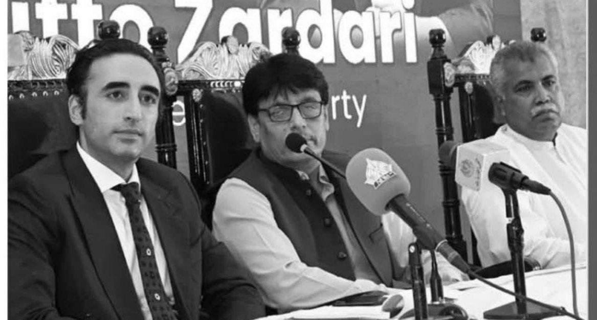

پاکستان میں اندرونی حالات سنگین صورتحال کی جانب رواں دواں۰۰۰ ادارے اپنا اعتماد کھو بیٹھے ہیں: بلاول بھٹو

پاکستان کے حالات انتہائی کشیدگی کی طرف رواں دواں دکھائی دے رہے ہیں۔ شہباز شریف کی حکمراں جماعت اور اسکی حلیف جماعتوں کے درمیان آئے دن اختلافات میں اضافہ دیکھا جارہا ہے۔ مولانا فضل الرحمٰن اور بلاول بھٹو کے ساتھ بھی شہباز شریف حکومت کے وزراء کے درمیان اختلافات نمایاں ہوتے جارہے ہیں۔ پاکستان کی سب سے اہم اور اپوزیشن پارٹی پاکستان تحریک انصاف (پی ٹی آئی) کو نقصان پہنچانے والے خوداب پریشان کن صورتحال سے دوچار دکھائی دے رہے ہیں۔
سابق وزیر اعظم و کرکٹ کے مایہ ناز سابق کپتان عمران خان کو جس طرح مختلف الزامات کے تحت قید رکھ کر شہباز شریف حکومت چلارہے ہیں۰۰۰ ذرائع ابلاغ کے مطابق پاکستان کے حکمراں اصل میں شہباز شریف نہیں بلکہ حکومت کی باگ ڈور فوجی سربراہ عاصم منیر کے ہاتھ میں ہے۰۰۰
عوام عاصم منیر کو حافظ قرآن سمجھ کر عزت و احترام کی نگاہ سے دیکھتی رہی ہے لیکن گذشتہ چند برسوں کے درمیان انکی ساکھ شدید متاثر ہوئی ہے کیونکہ پی ٹی آئی کے ساتھ فوج نے جس طرح کا معاملہ کیا اور عمران خان کو جھوٹے الزامات کے تحت گرفتار کرکے جسمانی اور ذہنی اذیت پہنچائی جارہی ہے اسے دنیا جانتی ہے۰۰۰
وزیر اعظم شہباز شریف وزارتِ عظمیٰ کی کرسی پر بیٹھے تو ہیں اور وہ عمران خان سے اپنی اور اپنے خاندان کی دشمنی بھی نکال لئے ہیں لیکن اس کے باوجود عمران خان آج بھی قید میں ہیں انکی طبیعت ہر روز بگڑنے کی اطلاعات موصول ہورہی ہیں۔ پاکستانی دنیا بھر میں فخریہ کہتے ہیں کہ انکا ملک ’قانون شریعت اسلامی‘ کے تحت چلایا جاتا ہے۰۰۰ لیکن دیکھا جائے تو سب سے زیادہ شرعی قوانین کے خلاف پاکستانی حکومت اور فوج کام کرتی ہے۰۰۰
پاکستانی عوام کا بھی یہی حال دکھائی دیتا ہے۔ ہاں اس میں شک نہیں کہ بہت کم لوگ ہونگے جو اسلامی قوانین پر عمل پیرا ہیں اور وہ چاہتے بھی ہیں کہ پاکستان شریعت مطہرہ کے مطابق رہے۰۰۰ پاکستان میں سب سے زیادہ بدامنی دیکھی جاتی ہے، معاشی حالات انتہائی خراب ہیں اور مستقبل مزید بگڑنے کے امکانات ہیں۔ پاکستانی حکمراں نہیں چاہتے کہ ہندوستان اور افغانستان کے ساتھ انکے ملک کے تعلقات خوشگوار اور پُرامن رہے۰۰۰
ہندو پاک اور افغانستان کے عوام چاہتے ہیں کہ پڑوسی ممالک کے ساتھ دوستانہ تعلقات رہے کیونکہ اس سے ہر دو کا فائدہ ہے۔ ان دنوں پاکستان میں مزید حالات خراب ہوتے دکھائی دے رہے ہیں کیونکہ وہاں سندھ کی تقسیم کے سلسلہ میں بحث جاری ہے۔
اس سلسلہ میں ذرائع ابلاغ کے مطابق پاکستان پیپلز پارٹی (پی پی پی) کے چیئرمین بلاول بھٹو زرداری نے کہا ہے کہ سندھ کی زبردستی تقسیم سے کراچی کے مسائل حل نہیں ہونگے بلکہ شہر میں خونریزی اور بدامنی کے خدشات پیدا ہوں گے، اور سندھ کی زبردستی تقسیم سے معاشرے میں نئی خلیج اور نفرتیں جنم لیں گی۔
منگل 17؍ نومبر کو کراچی میں صحافت سے ملاقات پروگرام سے خطاب کرتے ہوئے بلاول بھٹو زرداری کہنا تھا کہ سندھ کی زبردستی تقسیم سے دشمنی بڑھے گی عام آدمی ہتھیار اٹھانے پر مجبور ہونگے۔ سندھ کی تقسیم کے نتیجے میں خون خرابہ صرف کراچی نہیں بلکہ حیدرآباد، میرپورخاص، ٹنڈو الہ یار اور نوابشاہ تک پھیل سکتا ہے۔ ان کے مطابق پیپلز پارٹی عوام کی خواہشات اور آئین و قانون کے مطابق نئے صوبوں کے قیام کی حامی ہے۔
انہوں نے کہا کہ نئے صوبوں کا قیام پیپلز پارٹی کے منشور کا حصہ ہے، مخالفت صرف اس بات کی ہے کہ عوام کی مرضی کے بغیر زبردستی صوبے تقسیم نہ کیے جائیں۔ بلاول بھٹو نے کہا کہ ماضی میں کراچی میں بھائی کو بھائی سے لڑایا گیا اور قتل و غارت گری ہوئی ایسے حالات دوبارہ پیدا نہیں ہونے چاہئیں۔
ان کا کہنا تھا کہ ریفرنڈم آج تک غیر جمہوری مقاصد کے لیے کرائے گئے جمہوری عمل کے لیے نہیں، ریفرنڈم کی تجویز دینا آئینی طریقہ کار سے ہٹنے کی بات ہے پیپلز پارٹی غیر آئینی راستے کا ساتھ کیسے دے سکتی ہے؟ صوبے کے قیام یا تقسیم کے لیے آئین اور قانون میں طریقہ کار موجود ہے، اسی کے مطابق فیصلہ ہونا چاہیے۔ کسی بھی غیر آئینی اقدام کا ڈٹ کر مقابلہ کریں گے۔
بلاول بھٹو نے کہا کہ وزیر داخلہ پاکستان محسن نقوی اگر واقعی نیا صوبہ بنانا چاہتے ہیں تو پیپلز پارٹی کے پاس ہر صوبے، قومی اسمبلی اور سینیٹ میں ووٹ موجود ہیں۔ نئے صوبے بنانے ہیں تو آئینی، قانونی اور جمہوری طریقہ اختیار کیوں نہیں کیا جارہا؟
جمعرات 12؍ نومبر کو اسلام آباد میں میڈیا سے گفتگو کرتے ہوئے محسن نقوی نے کہا تھا کہ مختلف سرویز (رائے عامہ کے جائزوں) سے معلوم ہوا ہے کہ عوام کی اکثریت نئے صوبوں کے قیام کی حامی ہے، اس لئے اس معاملے پر ریفرنڈم کرایا جانا چاہیے۔
واضح رہے کہ ریفرنڈم عوام سے کسی اہم قومی یا آئینی معاملے پر براہِ راست رائے لینے کا ایک طریقہ ہے، اس میں ووٹرز کے سامنے ایک مخصوص سوال رکھا جاتا ہے جس کا جواب عموماً ’ہاں‘ یا ’نہیں‘ کی صورت میں دیا جاتا ہے۔
ذرائع ابلاغ کے مطابق بتایا جاتا ہے کہ نئے صوبے بنانے کے سلسلہ میں بھی 30؍ جولائی کو محسن نقوی نے ہی کہا تھا انہوں نے پاکستان کے انتظامی ڈھانچے پر سوال اٹھاتے ہوئے کہا تھا کہ ’جس نظام کے اندر ہم رہ رہے ہیں یہ کولیپس (ڈھا) چکا ہے‘۔ ساتھ ہی انہوں نے مسائل کے حل کیلئے ملک میں نئے صوبے بنانے کا مشورہ بھی دیا تھا۔
محسن نقوی کی جانب سے ریفرنڈم کی تجویز سامنے آنے کے بعد چیئرمین بلاول بھٹو کا کہنا تھا کہ ’ہم خود نظام کو نقصان پہنچاتے ہیں اور پھر پوچھتے ہیں کہ نظام کیوں تباہ ہوا، سسٹم تباہ ہے، اگر ہے تو وجہ تلاش کی جائے۔ سسٹم کو تباہ کروایا گیا، سسٹم کی تباہی کا میں بھی ذمہ دار ہوں، سسٹم کو سیاسی طور پر ری سیٹ کرنا ہوگا، ادارے اپنا اعتماد کھو بیٹھے ہیں اس کو بحال کرنا ہوگا۔
اسطرح بلاول بھٹو زرداری خود اس بات کو قبول کرتے ہیں کہ وہ خود بھی سسٹم کی تباہی کے ذمہ دار ہیں۰۰۰ اب جبکہ حالات انتہائی خراب ہوتے دکھائی دے رہے ہیں ان حالات میں انہوں نے کہا کہ پارلیمان پر اعتماد بحال کرنے کے لیے تمام سیاسی جماعتوں کو ساتھ لے کر چلنا ہوگا، مولانا فضل الرحمان کے ساتھ پی ٹی آئی اور عمران خان کا اعتماد بھی بحال کرنا ہوگا۔ پی ٹی آئی ملک کی سیاسی سٹیک ہولڈر اور سیاسی حقیقت ہے۔
پسند ہو یا نہ ہو پی ٹی آئی کے بغیر ملک نہیں چل سکتا۔ بیرونی چیلنجز کا مقابلہ کرنے کے لیے پہلے اپنا گھر درست کرنا ہوگا۔
’جتنا سیاسی انتقام لینا تھا لے لیا اب ملک کو درپیش مسائل کا مقابلہ کرنا ہوگا، اب کم از کم سیاسی انتقامی کارروائیاں بند کردینی چاہئیں پاکستان کی سیاست میں سیاسی انتقام کی روایت ختم کرنا ہوگی، سیاسی انتقام کا سلسلہ ہمیشہ کے لیے ختم ہونا چاہیے، پارلیمان کے ارکان کو آزادانہ طور پر اپنا کردار ادا کرنے کا موقع ملنا چاہیے‘۔ ان کا کہنا تھا کہ ’میں عمران خان کو سیاسی قیدی سمجھتا ہوں، پاکستان میں کوئی بھی سیاسی قیدی نہیں ہونا چاہیے۔
سیاسی قیدیوں کو رہا کرنا ہوگا آج نہیں تو کل ایسا کرنا پڑے گا، ماضی کی زیادتیوں کا نیک نیتی سے ازالہ کرکے اپوزیشن کا اعتماد جلد بحال کیا جاسکتا ہے‘۔ بلاول بھٹو زرداری نے کہا کہ اپوزیشن جماعتوں کے انتخابی اعتراضات کو سنجیدگی سے حل کرنے کی ضرورت ہے، گزشتہ انتخابات پر اٹھائے گئے اعتراضات کا جائزہ لینا ہوگا، اپنی 20 سالہ سیاسی زندگی میں پہلی بار دیکھا کہ اپوزیشن کے ساتھ حکومتی نمائندے بھی دھاندلی کا اعتراف کررہے ہیں۔
بلاول بھٹو کے بیان پر ردعمل کا اظہار کرتے ہوئے پاکستان کے وزیر اطلاعات عطا اللہ تارڑ نے کہا کہ ’صوبوں کے حوالے سے بحث کو روکا نہیں جاسکتا، اور جمہوری و قانونی تقاضا یہی ہے کہ اس موضوع پر گفتگو جاری رہے‘۔ انکا کہنا تھا کہ اگر پاکستان کے عوام نئے صوبوں کے حق میں رائے رکھتے ہیں تو ’بنا دیئے جائیں‘۔
وزیر اطلاعات تارڑ نے سندھ کی تقسیم کے نتیجے میں خون خرابے سے متعلق بلاول بھٹو کے بیانات پر تنقید کرتے ہوئے کہا کہ اس معاملے پر ’خون بہا دینے‘ کی بات ان کی سمجھ سے بالاتر ہے۔ یہاں یہ بات واضح رہے کہ پاکستان پیپلز پارٹی کے چیئرمین بلاول بھٹو نہیں چاہتے کہ سندھ کی تقسیم عمل میں آئے کیونکہ اس صوبہ میں انکی جڑیں مضبوط ہے۔
اسطرح بلاول بھٹو شہباز شریف حکومت کے ساتھ ہونے کے باوجود موجودہ حالات کو دیکھتے ہوئے حکومت کو فوراً سنبھلنے کی ترغیب دے رہے ہیں۔
جیسا کہ شہباز شریف حکومت نے گذشتہ چند برسوں کے دوران انکی مخالفت کرنے والے سیاسی و مذہبی جماعتوں کو ختم کرنے کی کوشش کی اور انکے قائدین کی گرفتاریاں عمل میں لاکر انہیں مختلف الزامات کے تحت قید میں رکھا ہے انکے ساتھ بھی بات چیت کرنے کو کہہ رہے ہیں کیونکہ انہیں ڈر ہے کہ مستقبل میں انکے ساتھ (یعنی بلاول بھٹو کے ساتھ) یا پھر جو بھی حکومت کی مخالفت کرنے پر اتر آتے ہیں انکے ساتھ بھی ایسا ہی معاملہ ہوسکتا ہے۰۰۰
مولانا فضل الرحمٰن کے ساتھ جو حالات بگڑتے دکھائی دے رہے ہیں یہ بھی بلاول بھٹو کیلئے اہمیت رکھتے ہیں۔ اب دیکھنا ہیکہ پاکستانی فوجی سربراہ عاصم منیر جو پاکستان کے بگڑتے حالات کے ذمہ دار سمجھے جاتے ہیں وہ کس قسم کا فیصلہ کرتے ہیں۰۰۰
مشرقِ وسطیٰ کے حالات پر قابو پانے کیلئے عالمی طاقتوں کو آگے آنا ہوگا۰۰۰
ایران اور امریکہ کے درمیان جنگ اور حوثی ملیشیا و یمن کی فورسز کے درمیان جاری لڑائی مشرقِ وسطیٰ کے حالات کو سنگین بنا کر رکھ دیا ہے۔ امریکہ اور ایران معاہدے کی بات کرتے ہیں لیکن پھر انکی جانب کہیں نہ کہیں کوئی بہانا بنا کر حملہ کردیا جاتا ہے۔ اسی طرح چہارشنبہ 18؍ نومبر کی علی الصبح ایران کی جانب سے کویت اور بحرین پر فضائی حملے کئے گئے جسے ان ممالک نے ناکام بنادیئے۔
ذرائع ابلاغ کے مطابق بتایا جاتا ہیکہ کویت کی فوج کے جنرل اسٹاف نے سوشل میڈیا پلیٹ فارم ایکس پر جاری بیان میں کہا کہ دھماکوں کی آوازیں دراصل فضائی دفاعی نظام کی جانب سے دشمن کے حملوں کو روکنے کے نتیجے میں پیدا ہورہی ہیں۔ بیان میں شہریوں سے اپیل کی گئی کہ وہ سکیورٹی اور حفاظتی ہدایات پر عمل کریں۔ امریکہ اور اسرائیل کی جانب سے ایران کے خلاف شروع کی گئی جنگ کے بعد سے کویت ایرانی میزائلوں اور ڈرون حملوں کی زد میں ہے۔
ایرانی حملوں میں کویت انٹرنیشنل ایئرپورٹ، تیل صاف کرنے کے کارخانے اور شعیبہ پاور پلانٹ سمیت اہم تنصیبات کو نشانہ بنایا جاچکا ہے۔ گذشتہ ہفتے خلیج تعاون کونسل (جی سی سی) کے وزرائے دفاع نے کویت میں متحدہ فوجی کمان کے لیے ایک جدید کمانڈ قائم کرنے اور اس کے لیے مناسب فوجی دستے مختص کرنے کی منظوری دی تھی۔ بحرین میں فضائی حملوں کی وجہ سے بحرین وزارتِ داخلہ نے شہریوں کو خبردار کرتے ہوئے انہیں محفوظ مقامات پر منتقل ہونے کی ہدایت دی تھی۔
ذرائع ابلاغ کے مطابق بحرین ڈیفنس فورس نے کہا ہے کہ اس نے ایران کی جانب سے کیے گئے متعدد فضائی حملوں کو روک دیا ہے۔ فورس نے ان حملوں کا ذمہ دار تہران کو قرار دیا۔ فضائی حملوں کو روکنے کی کارروائی تقریباً ایک گھنٹے تک چلی اور اسکے بعد خطرہ ٹلنے کا اعلان کیا گیا۔ وزارت نے رات تقریباً 3 بج کر 45 منٹ پر دوبارہ وارننگ جاری کی، تاہم 30 منٹ سے بھی کم وقت بعد بتایا کہ خطرہ ختم ہوگیا ہے۔
وزارت داخلہ کے مطابق بحرین کی سول ڈیفنس ٹیموں نے احتیاطی تدابیر کے طور پر سوق واقف میں ایک کثیر المنزلہ عمارت کو خالی کرایا اور وہاں لگنے والی آگ پر قابو پالیا۔ بیان میں کہا گیا کہ نیشنل ایمبولینس سینٹر نے جائے وقوعہ پر ضروری اقدامات کیے، جبکہ آگ لگنے کی وجہ جاننے کے لیے تحقیقات جاری ہیں۔
گذشتہ ہفتے ایران کے پاسداران انقلاب نے دعویٰ کیا تھا کہ اس کی فورسز نے بحرین میں امریکہ کے ایک ابتدائی انتباہی نظام کو نشانہ بنایا ہے، تاہم امریکی فوج نے اس دعوے کی تردید کی تھی۔ دوسری جانب یمن میں حوثی باغیوں کے فوجی اہداف کو حکومتی فورسس نے نشانہ بنایا۔ ذرائع ابلاغ کے مطابق یمن میں آئینی حکومت کی بحالی کے لیے قائم اتحادی افواج نے چہارشنبہ کی علی الصباح بتایا کہ اس نے ملک بھر میں حوثی باغیوں کے 60 فوجی اہداف پر حملے کیے ہیں۔
اتحادی افواج کے ترجمان میجر جنرل ترکی المالکی نے بتایا کہ یہ حملے صنعاء، عمران، صعدہ اور حدیدہ میں حوثی گروپ کے ٹھکانوں پر کیے گئے۔ اتحادی افواج کے مطابق ان حملوں میں زیرِ زمین بیلسٹک میزائل ذخیرہ کرنے کی تنصیبات پر مشتمل سرنگوں کو تباہ کیا گیا، جبکہ ڈرون تیار کرنے اور ذخیرہ کرنے والی ورکشاپس کو بھی نشانہ بنایا گیا۔
اس طرح امریکہ اور ایران جنگ کی وجہ سے مشرقِ وسطیٰ کے اُن ممالک کو شدید نقصان برداشت کرنا پڑرہا ہے جہاں امریکی ٹھکانے یا امریکی ہتھیار و فوج موجود ہے تو دوسری جانب یمن میں حوثی باغیوں کی وجہ سے یمن کے اندرونی حالات ہی بدتر نہیں ہورہے ہیں بلکہ سعودی عرب کے مختلف شہروں میں حوثی ملیشیاء حملے کرنے کی کوشش کررہی ہے یہ اور بات ہیکہ سعودی عرب کے ڈیفنس سسٹمز ان اہداف تک پہنچنے سے پہلے ہی اسے ناکارہ بنادے رہے ہیں اور اسی طرح کویت، بحرین میں بھی ایران کی جانب سے کئے جانے والے حملوں کو اہداف تک پہنچنے سے پہلے ہی ناکارہ بنادیا جارہا ہے۔
لیکن بعض اوقات ایرانی حملے اور حوثی ملیشیاء کے ہتھیار اپنے اہداف تک پہنچ بھی رہے ہیں جس کی وجہ سے ان ممالک کو بھاری نقصانات برداشت کرنے پڑرہے ہیں اور جانی نقصانات بھی ہورہے ہیں۔ مشرقِ وسطیٰ کے حالات کو مزید خراب ہونے سے بچائے رکھنے کی ضرورت ہے اور اس کے لئے عالمی طاقتوں کو فیصلے لینے ہونگے۰۰۰